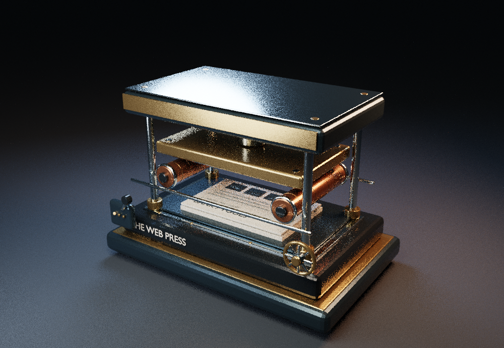
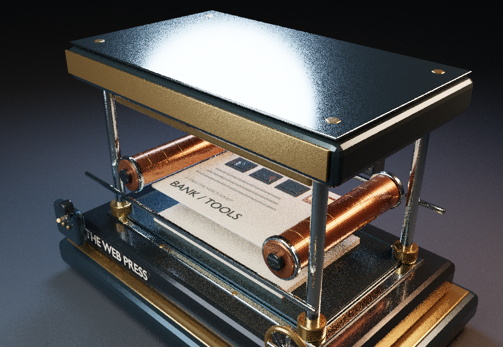
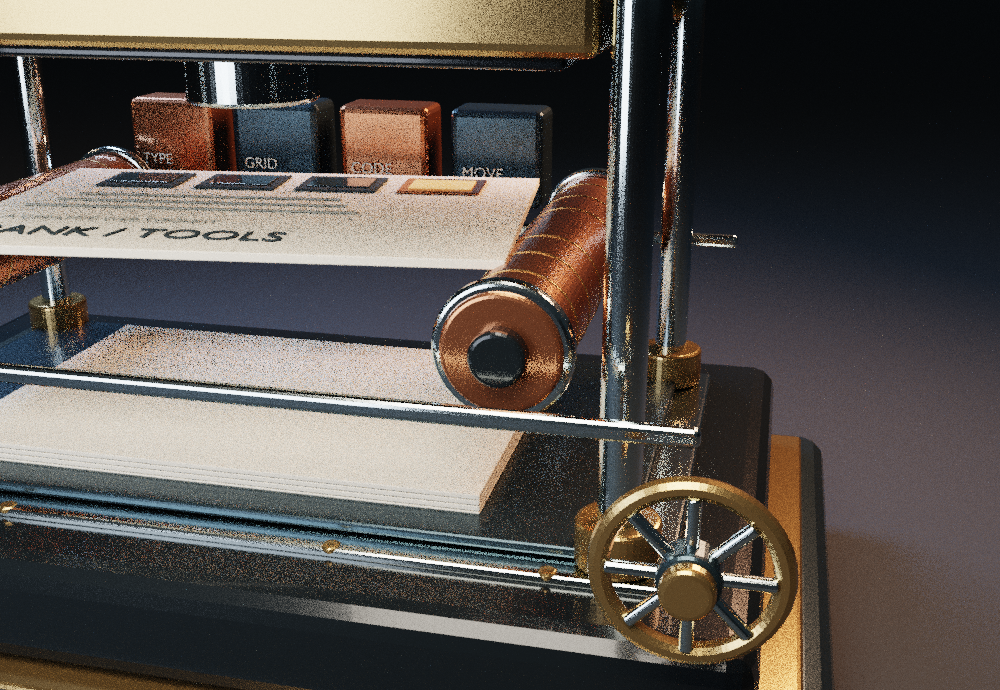

01 / ENGINEERING

Le mécanisme.
Structure usinée, guides, rouleaux, vérins et commandes.
Et si l'on fabriquait un site comme un objet d'exception ? Explore une véritable presse typographique numérique, de la matière jusqu'au mouvement.
Nous n'avons pas créé un objet décoratif à poser sur une page. Nous avons construit une machine qui représente ce que fait notre bibliothèque : transformer une idée en une véritable expérience.
Chaque détail existe pour une raison : guides mécaniques, rouleaux d'encre, matrice de composition, feuille imprimée. Faites défiler pour voir comment l'outil devient un site.Du châssis au moindre détail de la presse. La création web devient un objet que l'on peut observer sous tous ses angles.
Chaque composant de la machine est une pièce modélisée dans Blender. La lumière, les matériaux et les animations racontent un processus réel de conception.

Structure usinée, guides, rouleaux, vérins et commandes.

Une animation modélisée avant le navigateur : tout se déploie sans approximation.

Matériaux industriels et finitions précises. L'expérience dépend de sa matière.
Cette démonstration a une vraie fonction : transformer les choix du visiteur en un brief de création réutilisable. Nous vendrons une méthode, pas une bibliothèque de liens.